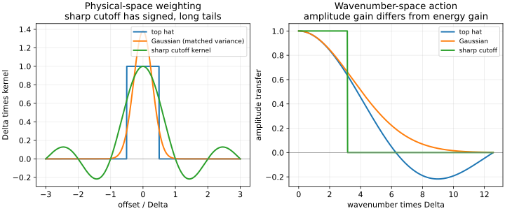

20. Filter families and subgrid viscosity
A filter length does not specify a filter. A box of width Delta, a Gaussian with a declared width convention, and a sharp spectral cutoff act differently on the same velocity field. Their normalization, repeated action and relation to numerical resolution determine what an SGS stress means. Once these choices are explicit, the Smagorinsky model supplies a simple approximation to the deviatoric stress and a testable direction of energy transfer.
This chapter follows complete captions68–69. The latter recording begins SGS closure and the Smagorinsky model after its filter discussion; those substantive nineteen minutes are included here. The repeated-filter argument is rebuilt with independent integration variables and Fourier multiplication. A box filter is not a sharp spectral cutoff, finite-volume discretization does not uniquely identify every filtering error, and the SGS trace is not automatically known from resolved velocity.
20.1 Specify the operator before its length L68 · 00:15
On the real line, let \(F_\Delta f(x)=\int_{-\infty}^{\infty}G_\Delta(r)f(x-r)\,dr\). The kernel has units inverse length and is normalized by \(\int G_\Delta(r)\,dr=1\). The scalar \(\Delta>0\) labels a length convention, not necessarily the support width for every family. A symmetric kernel has zero first moment if the moment exists. Nonnegative weights make the operation a local weighted average, but spectral filters can have signed real-space kernels. Time remains an argument of f and is not integrated in this spatial definition.
Use the Fourier convention \(\widehat f(\kappa)=\int_{\mathbb R}f(x)e^{-i\kappa x}dx\), with inverse \(f(x)=(2\pi)^{-1}\int\widehat f(\kappa)e^{i\kappa x}d\kappa\). Here \(\kappa\) is angular wavenumber, so wavelength is \(2\pi/|\kappa|\). The convolution theorem gives \(\widehat{F_\Delta f}=\widehat G_\Delta\widehat f\). Filtering therefore multiplies each mode's amplitude. Applying the same filter twice multiplies by \(\widehat G_\Delta^2\), rather than integrating an already transformed amplitude twice without a convolution rule.
The source attributes the generic convolution framework to Leonard1974. The primary text inspected here is Germano1992, its explicit/implicit filter discussion and two-level construction; no full Leonard paper is claimed read. We derive the formulas used below directly. On a periodic domain, the integral and transform become periodic convolution and a Fourier series; its exact projector kernel is a periodic series rather than the infinite-line sinc kernel. Boundaries and spatially variable widths require the qualifications developed in chapter19.
20.2 The box is localized in space, not sharply cut in wavenumber L68 · 05:00
A centered top hat is \(G_\Delta(r)=1/\Delta\) for \(|r|\le\Delta/2\), and zero otherwise. The absolute value matters: a literal one-sided inequality \(r\le\Delta/2\) would not define this finite box. Integrating its Fourier transform gives
This transfer function decays with oscillating side lobes, rather than becoming exactly zero beyond one universal cutoff. At \(\kappa\Delta=\pi\), its amplitude gain is \(2/\pi=0.63661977\), so its modal energy gain is \(4/\pi^2\approx0.405285\). At \(2\pi\) the gain is zero, but at \(3\pi\) it is−0.21220659. Negative gain reverses that mode's phase; it does not produce negative modal energy, which is multiplied by the squared magnitude. The phrase “sharp in physical space” means compact support with abrupt edges, not perfect separation by eddy size.
Two identical box filters compose by convolution. At offset r, the overlap of their two intervals has length \(\Delta-|r|\) for \(|r|\le\Delta\). Therefore \((G_\Delta*G_\Delta)(r)=(\Delta-|r|)/\Delta^2\) there, zero otherwise: a triangular kernel, normalized to one. Its support width is \(2\Delta\), but it is not a uniform box of width \(2\Delta\). Its second moment is \(\Delta^2/6\), twice the original box's \(\Delta^2/12\). This supplies the precise replacement for the source's shorthand that another factor \(1/\Delta\) alone proves non-idempotence. The double integral, including the shifted arguments and finite supports, is essential.
For a homogeneous velocity field with scalar spectrum E, the filtered spectrum is \(|\widehat G|^2E\). Residual-velocity spectrum is \(|1-\widehat G|^2E\). In general these two do not sum to E: their cross spectrum is present. This is the spectral counterpart of the missing Reynolds rules. A box-filter residual is not automatically an orthogonal disjoint band of small scales.
20.3 The sharp cutoff is a projection with a nonlocal kernel L68 · 10:25
Choose \(\kappa_c>0\) and set \(\widehat G_c(\kappa)=1\) for \(|\kappa|\le\kappa_c\), zero otherwise. Values at the endpoints of an infinite-line integral do not affect ordinary integrable fields; in a discrete series the retained boundary modes must be specified. Since the multiplier is zero or one, \(\widehat G_c^2=\widehat G_c\), so \(F_c^2=F_c\) on its natural function space. This proves idempotence for this operator on all inputs, rather than on one convenient signal.
The inverse transform is
It has signed oscillatory tails and no compact spatial support. Its normalization is interpreted in the appropriate improper/distributional sense, rather than as an absolutely integrable positive averaging density. With the explicit convention \(\kappa_c=\pi/\Delta\), its dimensionless form is \(\Delta G_c(r)=\sin(\pi r/\Delta)/(\pi r/\Delta)\). The smallest retained wavelength is \(2\Delta\); changing a width convention changes this relation. No cutoff can be specified without its units and angular-versus-cyclic convention.
A Fourier cutoff is an orthogonal projection in the global \(L^2\) inner product on a periodic domain with the usual Fourier basis. Its retained and removed modes have zero global inner product, so their integrated energies partition without a cross term. This does not make its local kernel nonnegative or its local central moment PSD. For the nonnegative scalar \(f=(1+\cos x)^2=3/2+2\cos x+(1/2)\cos2x\), a cutoff retaining modes0and1 yields \(Ff=3/2+2\cos x\), which equals−1/2at x=pi. A positive field can have a negative projected value.
Likewise, take velocity component \(u=\cos x\) with that cutoff. Then \(Fu=u\), \(F(u^2)=1/2\), and \(\tau=F(u^2)-(Fu)^2=1/2-\cos^2x\), negative at x0. This is an operator counterexample, not an impossible ensemble covariance. The positive-kernel proof in chapter19 does not apply. Idempotence, global orthogonality and pointwise positivity are distinct properties.

20.4 Repeated filtering depends on the family L69 · 00:14
A useful Gaussian convention is \(G_\Delta(r)=\sqrt{6/\pi}\,\Delta^{-1}\exp(-6r^2/\Delta^2)\). Its integral is one, mean zero, and second moment \(\Delta^2/12\), matching the box. Its transform is \(\exp(-\kappa^2\Delta^2/24)\). Neither physical nor Fourier support is compact. Its gain is positive, smooth and below one for nonzero wavenumber. Matching second moments does not make it identical to a box: their large-wavenumber behavior differs substantially.
Multiplying two Gaussian gains with widths \(\Delta_1,\Delta_2\) gives another Gaussian with \(\Delta_{\rm combined}=\sqrt{\Delta_1^2+\Delta_2^2}\). Repeating the same width therefore gives \(\sqrt2\Delta\), whereas composing widths Delta and2Delta gives \(\sqrt5\Delta\). Calling the second operation a “test filter of width2Delta” does not by itself make the combined operation exactly a width2Delta Gaussian. This distinction will matter in a dynamic model's scale ratio.
For two sharp spectral cutoffs, composition retains the intersection of their mode sets, thus the lower of their two cutoff wavenumbers. For two boxes, the composition is generally neither original box nor Gaussian; even when variances add, the kernel shape must still be identified. The following comparison summarizes the specific conventions used here.
| Property | Top hat | Gaussian | Sharp spectral cutoff |
|---|---|---|---|
| Real-space weights | Positive, compact | Positive, infinite tails | Signed, infinite tails |
| Amplitude gain | sinc(kappa Delta/2) | exp(−kappa²Delta²/24) | Zero or one |
| Repeated same operator | Triangular convolution | Width becomes sqrt2Delta | Same projection |
| Pointwise positive-kernel variance argument | Applies | Applies | Does not generally apply |
20.5 A cell average is useful, but a scheme has more properties L69 · 07:28
A finite-volume cell average is a spatial volume average, so a box-filter interpretation is natural for a rectangular cell. This motivates tying a nominal filter scale to the cell size. However, the discrete scheme also uses reconstruction, interpolation, fluxes, pressure coupling and time integration. Their combined action does not become a completely specified exact convolution merely because the conserved variable is a cell average. On an irregular or anisotropic mesh, a scalar cube-root volume loses geometric information.
“Implicit filtering” commonly means the numerical representation limits the resolved scales without applying a separately prescribed filter to every term. It does not mean implicit time integration. Finite differences and finite elements can also be used in implicitly filtered LES; an explicit filtering pass is not logically compulsory for every non-finite-volume method. An explicit grid or test filter can be added when the formulation requires it. Nor does applying a finite-volume discretization automatically supply a physically adequate SGS closure.
Sampling introduces another problem. At N equispaced points \(x_j=2\pi j/N\), modes \(e^{i(m+N)x_j}\) and \(e^{imx_j}\) have identical samples. The grid cannot distinguish them. Nonlinear products can generate modes above its represented range and alias them into lower modes unless the algorithm addresses this. A filter length alone is not an anti-aliasing proof, and the highest Nyquist mode is not a promise of accurate gradients at that wavelength. The executed mode-identity check below illustrates the information loss without running an LES.
20.6 Closing the deviatoric SGS stress L69 · 11:15
Retain the chapter19 definition \(\tau_{ij}=F(u_i u_j)-\bar u_i\bar u_j\), \(\tau^d_{ij}=\tau_{ij}-\tau_{kk}\delta_{ij}/3\), and resolved strain \(\bar S_{ij}\). A scalar subgrid-viscosity ansatz is
This resembles Boussinesq stress in algebraic form, but \(\nu_s\) represents only the chosen unresolved contribution. It is a modeled transport coefficient, not a new molecular material property. The strain is computed from resolved velocity; the SGS trace still contains filtered products that are unavailable in a basic LES. Calling tau_kk a filtered variable does not make it known. If only incompressible velocity is required, its isotropic gradient can be absorbed into modified pressure. A separate energy model or other closure is needed if k_s itself or physical filtered pressure is required. The factor2/3in(20.3) follows from tracing; replacing tau_kk by2k_s does not remove the divisor3.
With \(|\bar S|=\sqrt{2\bar S_{ij}\bar S_{ij}}\), choose a subgrid length \(\ell_s=C_s\Delta\), where \(C_s\) is dimensionless, and set
The first relation is the classic static Smagorinsky form used here. Length squared times inverse time has viscosity units. Since \(C_s^2\ge0\), Delta²is nonnegative and strain magnitude is nonnegative, \(\nu_s\ge0\) and the modeled resolved-energy transfer is nonnegative. This is a restricted dissipativity property, not an unconditional numerical-stability theorem or proof of correct stress direction. It cannot represent negative local transfer. Incompressibility makes the isotropic stress part vanish in this contraction.
The inspected Smagorinsky discussion in Germano1992, printed331, identifies the deviatoric stress/strain relation, dimensional model scale and limitations under shear and at walls. This supports a bounded model comparison; no original1963paper or present commercial-solver prevalence has been audited. A spectrum-based equilibrium motivation requires assumptions beyond dimensional consistency. In particular, the modeled transfer out of resolved scales equals the modeled source to subfilter energy when budgets use the same stress. Equating that source instantaneously with the final molecular dissipation requires a separate local-equilibrium approximation. SGS models more generally can include transport, backscatter and structural stress information, so “only dissipate” is a description of this static eddy-viscosity strategy, not a definition of all SGS closures.
20.7 Test the coefficient and the flow, not only the dimensions L69 · 23:30
For the local shear \(\bar U_1=Sy,\bar U_2=\bar U_3=0\), strain entries12and21equal S/2, so \(|\bar S|=|S|\), \(\tau_{12}=-\nu_sS\), and \(\Pi_m=\nu_sS^2\). At S100/s and Delta0.002m, Cs0.065,0.1,0.25give viscosities \(1.69\times10^{-6},4.0\times10^{-6},2.5\times10^{-5}\,\mathrm{m^2/s}\) and transfers0.0169,0.04,0.25square meters per cubic second. Relative to the stipulated molecular viscosity \(1.5\times10^{-5}\), the viscosity ratios are0.112667,0.266667,1.666667.
The lecture lists0.065for channel-type examples and0.25for a jet example. Those are attributed source choices, not universal recommended constants for every channel and jet. Their viscosity ratio at the same filter and strain is14.7929 because the coefficient is squared. Some formulas instead name \(C=C_s^2\); inserting a value under the wrong convention changes the model by another substantial factor. Filter shape, resolution, flow, numerical dissipation and wall treatment affect calibration. A coefficient does not become theoretically bounded below1 merely because it labels a subgrid length; its interpretation and admissibility belong to the closure convention.
Two limiting fields expose further behavior. Rigid rotation \(\bar{\boldsymbol u}=(-\Omega y,\Omega x,0)\) has zero symmetric strain, so this model gives zero viscosity and transfer despite nonzero vorticity. Planar extension \((ax,-ay,0)\) has \(|\bar S|=2|a|\); at a100/s, Cs0.1and the same Delta, \(\nu_s=8\times10^{-6}\) and \(\Pi_m=0.32\). The model responds to laminar strain too. Nonzero strain does not establish actual unresolved turbulence. This motivates the wall corrections and dynamically inferred coefficients in the following chapters.
For a nominal three-dimensional grid scale one often chooses \(\Delta=(\Delta_x\Delta_y\Delta_z)^{1/3}\). Its units are length: a volume alone cannot be compared with a wall distance or inserted as the length in(20.4). Equal cell volumes can have radically different aspect ratios and directional resolution. Reducing Delta at fixed strain makes viscosity scale as Delta², but in a coupled refinement the strain and resolved field change too. Budget consistency, adequate resolved scales and statistical comparison remain necessary.
"""Exact filter symbols, projection counterexample and local closure checks."""
from math import exp, pi, sin, sqrt
def sinc(z):
return sin(z) / z if z else 1.0
for q in (0.5, 1.0, pi, 2 * pi, 3 * pi):
box = sinc(q / 2)
gaussian = exp(-q * q / 24)
cutoff = 1.0 if q <= pi else 0.0
print(
f"kDelta={q:.8f}: box={box:.8f}, Gaussian={gaussian:.8f}, "
f"cutoff={cutoff:.0f}"
)
print(
f"same-width box variance after one/two passes: {1 / 12:.8f}, {1 / 6:.8f}"
)
print(f"same-width Gaussian effective-width multiplier: {sqrt(2):.8f}")
print(
f"grid Delta and test width2Delta Gaussian composite width/Delta: "
f"{sqrt(5):.8f}"
)
# Positive scalar field (1+cos x)^2 projected to retain only modes0,+/-1.
positive_original = (1 + (-1)) ** 2
projected = 1.5 + 2 * (-1)
print(
f"nonnegative field at pi and its sharp projection: "
f"{positive_original:.8f}, {projected:.8f}"
)
assert projected < 0
# Velocity cos(x), sharp cutoff retains modes0,+/-1: F(u)=u, F(u^2)=1/2.
print(f"signed-kernel scalar stress at x0: {0.5 - 1:.8f}")
delta, shear, nu = 0.002, 100.0, 1.5e-5
for cs in (0.065, 0.1, 0.25):
nut = (cs * delta) ** 2 * abs(shear)
stress12 = -nut * shear
transfer = nut * shear**2
print(
f"Cs={cs}: nu_sgs={nut:.10f}, tau12={stress12:.8f}, "
f"Pi={transfer:.8f}, nu_sgs/nu={nut / nu:.8f}"
)
print(f"viscosity ratio Cs .25/.065: {(0.25 / 0.065) ** 2:.8f}")
# Rigid rotation has zero symmetric strain; pure extension does not.
a, cs = 100.0, 0.1
extension_norm = 2 * abs(a)
extension_nut = (cs * delta) ** 2 * extension_norm
print(
f"pure extension strain norm and modeled transfer: "
f"{extension_norm:.8f}, {extension_nut * 4 * a * a:.8f}"
)
print(
"rigid rotation strain norm and modeled transfer: 0.00000000, 0.00000000"
)
for n in (16, 32, 64):
h = 2 * pi / n
# Samples of a mode differing by n are identical on n equispaced nodes.
alias_error = max(
abs(sin((n + 3) * j * h) - sin(3 * j * h)) for j in range(n)
)
print(f"alias identity N={n}: maximum sample difference={alias_error:.3e}")
kDelta=0.50000000: box=0.98961584, Gaussian=0.98963740, cutoff=1 kDelta=1.00000000: box=0.95885108, Gaussian=0.95918946, cutoff=1 kDelta=3.14159265: box=0.63661977, Gaussian=0.66283213, cutoff=1 kDelta=6.28318531: box=0.00000000, Gaussian=0.19302529, cutoff=0 kDelta=9.42477796: box=-0.21220659, Gaussian=0.02469630, cutoff=0 same-width box variance after one/two passes: 0.08333333, 0.16666667 same-width Gaussian effective-width multiplier: 1.41421356 grid Delta and test width2Delta Gaussian composite width/Delta: 2.23606798 nonnegative field at pi and its sharp projection: 0.00000000, -0.50000000 signed-kernel scalar stress at x0: -0.50000000 Cs=0.065: nu_sgs=0.0000016900, tau12=-0.00016900, Pi=0.01690000, nu_sgs/nu=0.11266667 Cs=0.1: nu_sgs=0.0000040000, tau12=-0.00040000, Pi=0.04000000, nu_sgs/nu=0.26666667 Cs=0.25: nu_sgs=0.0000250000, tau12=-0.00250000, Pi=0.25000000, nu_sgs/nu=1.66666667 viscosity ratio Cs .25/.065: 14.79289941 pure extension strain norm and modeled transfer: 200.00000000, 0.32000000 rigid rotation strain norm and modeled transfer: 0.00000000, 0.00000000 alias identity N=16: maximum sample difference=5.512e-15 alias identity N=32: maximum sample difference=1.693e-14 alias identity N=64: maximum sample difference=3.331e-14
20.8 Exercises with complete solutions
1. Derive the box gain and distinguish amplitude from energy.
Integrate \(e^{-i\kappa r}/\Delta\) from−Delta/2toDelta/2to obtain sin(kappaDelta/2)/(kappaDelta/2). Its limit at zero is1by sinz/z. At qpi the amplitude is2/pi, energy4/pi². At q3pi it is−2/(3pi), so the phase reverses but energy gain is its positive square. Zeros at isolated modes do not imply zero response to all higher wavenumbers.
2. Prove that the double box is triangular and normalized.
Convolution counts overlap of two intervals, each with density1/Delta. The overlap length is Delta−|r|for |r|≤Delta, yielding density(Delta−|r|)/Delta². Its integral is \(2\Delta^{-2}\int_0^\Delta(\Delta-r)dr=1\). Its second moment is \(2\Delta^{-2}\int_0^\Delta r²(\Delta-r)dr=\Delta²/6\). Thus normalization remains but shape and moment change; the extra normalization factor alone is not a proof.
3. Prove sharp-cutoff idempotence and give its positivity counterexample.
The gain g is0or1, hence g²=gmodewise and the operator is a projection. Expand the positive field(1+cosx)²into3/2+2cosx+cos2x/2. Removing mode2leaves3/2+2cosx, negative−1/2atpi. Therefore an orthogonal spectral projector need not preserve pointwise nonnegativity. Its sinc kernel has signed lobes; the nonnegative-weight variance argument is inapplicable. No contradiction with global L²energy contraction follows.
4. Combine two Gaussian filters and state what “twice the width” means.
The gains multiply to \(\exp[-\kappa²(\Delta_1²+\Delta_2²)/24]\), so effective width is the root sum of squares. Delta followed by2Delta produces sqrt5Delta; to obtain a composite width2Delta from a grid Gaussian of widthDelta, the additional Gaussian width must be sqrt3Delta. These are results under the matched-variance convention. A different width definition must first be converted consistently.
5. Derive Smagorinsky shear viscosity and coefficient sensitivity.
Simple shear has two strain entries S/2, so \(2S:S=S²\). Thus nu_s=Cs²Delta²|S|, tau12=−nu_sS, Pi=nu_sS². At Cs0.1,Delta0.002,S100, these are4e−6,−4e−4and0.04in the stated SI units. Holding Delta and strain fixed, changing Csfrom0.065to0.25multiplies viscosity and transfer by(0.25/0.065)²=14.7928994. This is an input sensitivity, not a forecast for fully coupled solutions.
6. Why does the stress trace remain unknown?
Its definition is tau_kk=F(|u|²)−|Fu|². Resolved velocity supplies only the second term. A viscosity ansatz determines the deviatoric part, with zero trace in incompressible flow, and cannot determine the missing scalar. Absorbing tau_kk/3into kinematic pressure closes the velocity equation's pressure-gradient representation but does not recover physical filtered pressure. If defining k_s=tau_kk/2, the isotropic term is2k_s delta_ij/3, whose trace is2k_s, as required.
7. Can dissipativity diagnose turbulence or guarantee time stability?
No. In rigid rotation symmetric strain is zero; in planar laminar extension it is nonzero. The latter can produce positive modeled Pi even without turbulent residual fluctuations. The algebra Pi=2nu_sS:S≥0only fixes the modeled resolved-energy sink's sign under this closure. A time-discrete diffusion update still has stability restrictions, and inaccurate fluxes or pressure coupling can spoil the discrete energy balance. Matching the sign of one term neither establishes turbulence nor validates a solution.
8. Show the alias identity and its consequence for filtering.
At x_j=2pi j/N, \(e^{i(m+N)x_j}=e^{imx_j}e^{i2pi j}=e^{imx_j}\). Thus two distinct continuum modes have the same Nsamples. A discrete filter cannot infer which original mode generated those samples without extra information. Nonlinear products create higher modes, so their treatment and any dealiasing or reconstruction are part of the numerical method. An advertised filter width or a continuum gain alone does not specify those choices.
The model and the filter act together: the filter defines the missing product, while the viscosity supplies a limited stress approximation with a clear energy sign. Its useful simplicity makes its failures equally precise. Near-wall scaling, energy memory and information at a second filter level provide the next tests.